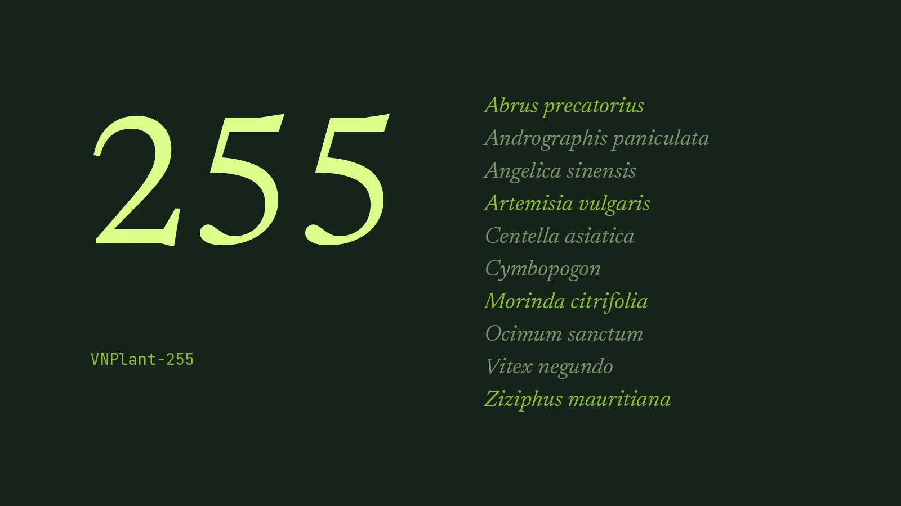

Aaron
AaronPhân loại cây thuốc Việt Nam
Đại học FPT · cùng Đàm Nguyễn Quỳnh Hoa và Phạm Thị Thảo Nguyên

Đánh giá nhiều mô hình học sâu trên bộ ảnh 255 loài cây thuốc Việt Nam.
Bối cảnh
VNPlant-200 (Nguyễn Quốc Trung và Trương Hoàng Vinh, 2021) là bộ ảnh công khai đầu tiên về 200 loài cây thuốc Việt Nam. Nhóm chúng tôi mở rộng bộ này thành VNPlant-255: thêm 55 loài, tổng cộng khoảng 34.800 ảnh chụp ngoài thực địa, với ánh sáng, nền và góc chụp thay đổi tự nhiên.
Mục tiêu là một bộ chuẩn đánh giá cho bài toán phân loại chi tiết: so sánh mạng tích chập, Transformer, mô hình lai và mô hình gọn nhẹ trong cùng một cấu hình.
Cách đánh giá
- Chia 80/10/10 cho huấn luyện, kiểm định, kiểm thử, giữ tỉ lệ từng loài.
- Cùng độ phân giải 224 px, cùng kích thước lô, 20 epoch cho mọi mô hình.
- Ghi lại độ chính xác, số tham số và chi phí tính toán để xét khả năng triển khai.
Phần việc đảm nhận
- Huấn luyện và đánh giá bảy họ mô hình: ConvNeXtV2-Tiny, MaxViT-Tiny, CoAtNet-0, SwinV2-Tiny, Xception, Xception kết hợp MIGT, và YOLOv8 phân loại.
- Quản lý dữ liệu, trọng số và nhật ký huấn luyện của nhóm trên Kaggle.
Ghi chú
Nhóm quyết định không công bố bài báo. Ảnh của 200 loài gốc thuộc VNPlant-200 nên không được phát hành lại ở đây.